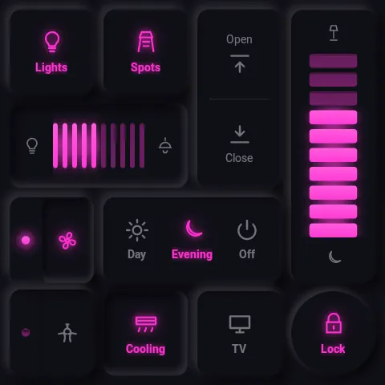
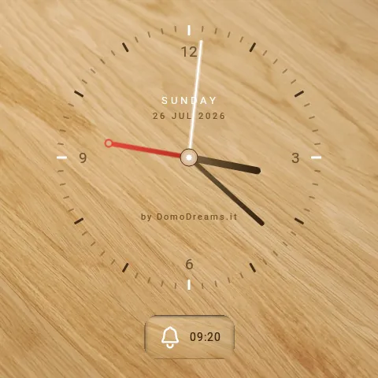
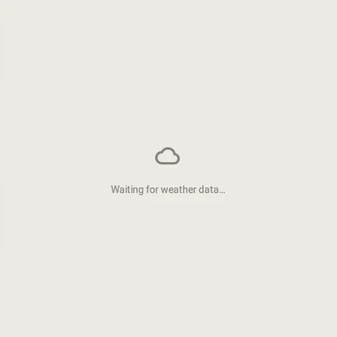
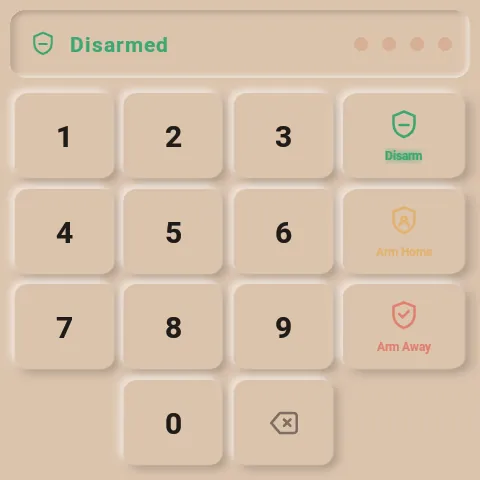
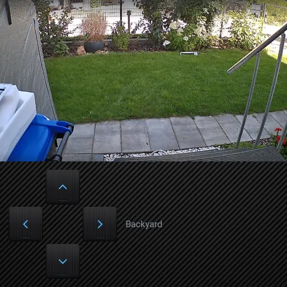
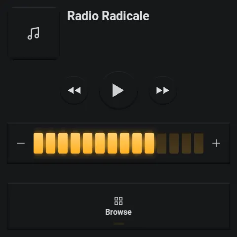
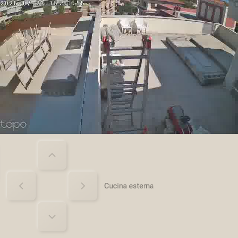
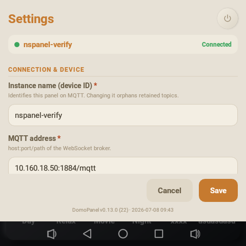

Features
What the panel can do.
Six typed page types, a shelf of tactile tiles, a live camera, an alarm keypad with an on-screen siren, notifications, presence and light sensors, and 32 curated styles — all configured visually and driven over MQTT.
Configure it all from Home Assistant
the admin GUI · no YAMLA visual editor lives right in the Home Assistant sidebar. Build pages by clicking, watch a live preview of the panel as you edit, and push changes to the wall over the air — no YAML, no JSON by hand.

Layout tab · live preview in the middle, your pages on the left, the panel's settings on the right.
point & click
Tiles, no code
Drop a tile on the grid, then set its entity, icon and label in the inspector — every change lands live in the preview. Drag to move, drag a corner to resize.

page types
Set up any page
Add grid, clock, weather, alarm, camera or music pages, set the swipe order, and configure each one's specifics — like a camera's stream and PTZ pad.

device
Sensors, screensaver & licence
One Device tab for the screensaver, presence and light sensors, auto-brightness, diagnostics and the licence — sliders and toggles, applied without a restart.

Typed pages
each shown in a different stylegrid
The control grid
Buttons, split tiles and a scene bar. Lights, switches, scenes, scripts — one tap each, lit from real state.

Style · Cyberpunk
clock
Clock & screensaver
Analog or digital, fully themeable. Doubles as the dimmed screensaver — the screen you see most of the day.

Style · Oak Wood
weather
Weather
Current conditions with pressure, humidity and wind, plus a daily and hourly forecast — mirrored from your Home Assistant weather entity and themed to match the wall.

Style · Coastal
alarm
Alarm keypad
A full Alarmo keypad — arm away, arm home, disarm, live status. The security surface, right by the door.

Style · Terracotta
camera
Live camera
Streams your camera in-panel with pan, tilt and zoom — and notices when a feed freezes, so a dead stream never passes for a live one.

Style · Carbon Weave
music
Music
A full Music Assistant player, not just a remote: the panel registers as a speaker you can pick from any MA app, with a native audio engine doing the playback. Transport, volume and browsing on the page; now-playing takes over the screensaver while music plays.

Style · Hi-Fi '90
The grid, up close
A shelf of tactile tiles
Every tile is a pre-rendered surface, not a stack of shadows — so it stays crisp and cheap to draw on the panel's modest GPU.
- button
- Toggle & momentary. Lights, switches, scenes, scripts.
- dimmer
- Step up / down. Tap the upper or lower half; long-press auto-repeats.
- switcher
- Multi-state. Cycle through fixed options with a tap.
- split
- Two actions, one tile. Independent halves for tight layouts.
- rocker
- Cover & blind control. Up / stop / down, physical-feeling.
- text
- Live readouts. Icon · value · label columns — sensor states or attributes, fixed text, no controls. Stack two rows in one tile.
- scene bar
- One-tap scenes. A row of shortcuts pinned across the grid.

No drag, on purpose. Continuous drag feels bad on this touchscreen, so dimmers and covers step via taps with long-press auto-repeat — a deliberate decision made on the real hardware.
Security & alerts
alarm · siren · notificationsalarm
Alarmo keypad
Arm away, arm home, disarm and read live state — the full keypad by the door, themed like everything else. No separate app, no web view of a dashboard.
siren
On-screen siren
When the alarm trips, the panel turns into a siren — a full-screen flashing alert and a loud looping tone. It holds the top audio priority: never ducked, never talked over, and an ordinary Home Assistant call can't silence it — only a deliberate stop can.
notifications
Notifications
Push a message to the glass — a banner, or full-screen for the urgent ones, which wake a sleeping panel. Normal ones wait quietly and show at the next wake, so nothing burns its timeout in an empty room. Optional sound, or spoken aloud as a TTS announcement.
Wired into Home Assistant. A notify.<panel>
entity and services push messages, speech and sounds; bus events
(shown · dismissed · expired) let your automations react to
what actually reached the person in the room.
Eyes on the door
A live camera you can trust
Your camera streams right on the panel, with pan, tilt and zoom. And if the feed quietly drops, the panel spots the frozen picture and flags it — so a stuck frame never sits there looking perfectly live.

Built-in sensors
presence & lightpresence sensor
Wakes as you approach
An active proximity sensor lets the panel light up before you touch it, and settle back to its dimmed screensaver once you walk away — so it's bright when you're there and dark when you're not. Surfaced to Home Assistant as well.
light sensor
Reads the room's light
An ambient light sensor drives auto-brightness — never glaring at 3 a.m., never washed out at noon — and is published to Home Assistant as an illuminance sensor you can automate on.
The system underneath
32 curated styles
Light and dark, matte and metallic, wood and neon. Change the whole feel of the wall from a menu. Browse them →
Owns its own dimming
Two-stage inactivity → default page → dimmed clock screensaver. Wakes on touch or the presence sensor. Nothing burns in.
Music & audio
The panel is a working Music Assistant player in its own right — select it from any MA app and it plays, natively. TTS announcements duck the music, speak, then bring the volume right back.
Multi-panel
One HA drives many panels. Each is its own device, config document and topic namespace — services are device-targeted throughout.
Visual editor
A WYSIWYG config panel in the HA sidebar, admin-only. Remote-control and live screenshots of the panel, right from the browser.
Offline-first
Boots and renders from retained topics + local cache. Broker or HA down ⇒ last-known UI, visual feedback only, nothing lost.
Built for the wall
A real kiosk build
Purpose-built for the NSPanel Pro hardware and nothing else.

See it in every style.
Thirty-two styles across an example panel — then pick a licence.